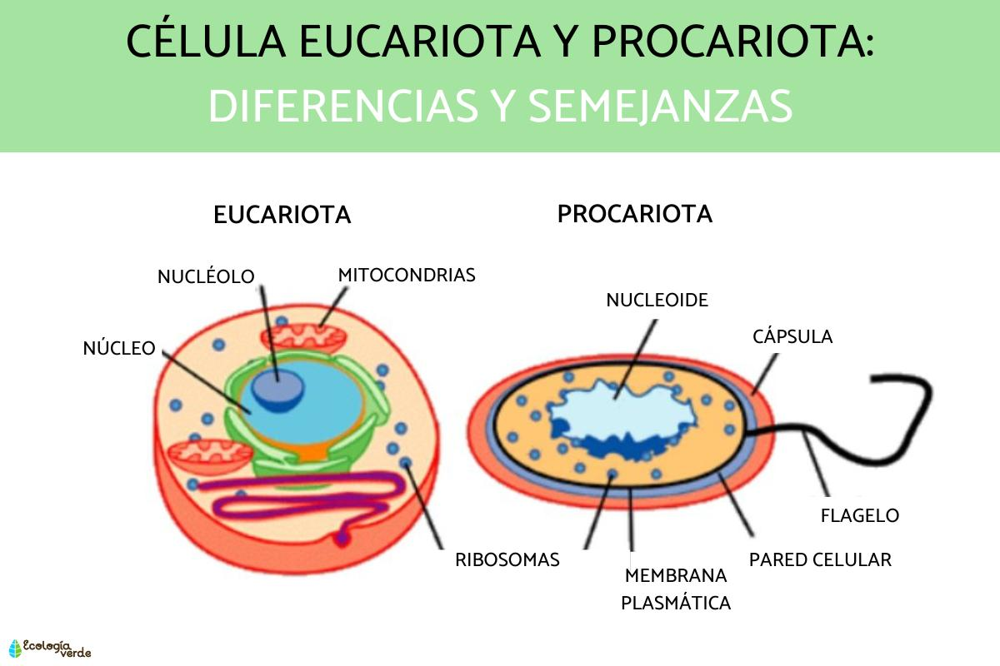

Anatomía celular
Membrana, citoplasma, núcleo, orgánulos y más.
Explora las estructuras internas que hacen funcionar a la célula.
Célula procariota
Una célula procariota es un tipo de célula que se caracteriza por no tener un núcleo definido, ya que su material genético se encuentra libre en el citoplasma, en una región llamada nucleoide. Además, carece de orgánulos rodeados por membranas, como las mitocondrias o el aparato de Golgi. Estas células son generalmente pequeñas, de estructura sencilla y pertenecen a organismos unicelulares, como las bacterias y las arqueas. Su ADN suele tener forma circular, y se reproducen de manera rápida mediante un proceso llamado fisión binaria. A pesar de su simplicidad, las células procariotas desempeñan un papel fundamental en el equilibrio de los ecosistemas y en muchos procesos biológicos.
Partes de la célula procariota:
- Citoplasma: Contiene abundantes ribosomas 70S e inclusiones citoplasmáticas. Puede contener plásmidos. Funciona como matriz para orgánulos y facilita el movimiento intracelular.
- Gránulos de alimentos: Productos del metabolismo que almacenan nutrientes y energía dentro del citoplasma.
- Nucleoide: Región donde se encuentra el ADN bacteriano circular, no asociado a histonas, a veces anclado a la membrana celular.
- Mesosoma: Invaginaciones de la membrana plasmática con enzimas y citocromos, implicados en respiración celular, fotosíntesis, división celular y reparto del ADN.
- Ribosomas: Orgánulos responsables de la síntesis de proteínas, libres en el citoplasma (70S).
- Membrana celular: Bicapa fosfolipídica con proteínas; permeabilidad selectiva y comunicación celular.
- Pili (o fimbrias): Filamentos de pilina que permiten adhesión a superficies, conjugación bacteriana y colonización de tejidos.
- Pared celular: Compuesta de peptidoglucano; aporta forma, rigidez y protección.
- Plásmido: Moléculas de ADN circular independientes, con genes de resistencia y otras ventajas.
- Flagelo: Estructura locomotora formada por cuerpo basal, gancho y filamento de flagelina.
- Cápsula: Capa viscosa de polisacáridos o polipéptidos; protege contra desecación y el sistema inmune.
Célula eucariota
Una célula eucariota es un tipo de célula que se caracteriza por tener un núcleo definido, rodeado por una membrana, donde se encuentra protegido su material genético (ADN). Estas células pueden formar organismos unicelulares, como algunos protozoos, o multicelulares, como animales, plantas y hongos. Son más grandes y complejas que las procariotas, y su reproducción puede ser asexual (mitosis) o sexual (meiosis).
Partes de la célula eucariota:
- Pared celular (solo en plantas y hongos): Estructura rígida que protege y da forma.
- Membrana celular: Bicapa fosfolipídica semipermeable que regula el paso de sustancias.
- Citoplasma: Sustancia gelatinosa donde se encuentran suspendidos los orgánulos.
- Organelos (con membrana):
- Mitocondrias: Generan energía (ATP) por respiración celular.
- Plastidios (plantas):
- Cloroplastos: Fotosíntesis.
- Leucoplastos: Almacenamiento de almidón.
- Cromoplastos: Colores en pétalos y frutos.
- Lisosomas: Digestión celular (autofagia).
- Peroxisomas: Eliminan toxinas (H₂O₂).
- Glioxisomas (solo semillas): Transforman grasas en azúcares.
- Vacuola: Almacenamiento de agua y nutrientes; central en células vegetales.
- Sistema de endomembranas:
- Retículo endoplasmático rugoso (RER): Síntesis de proteínas.
- Retículo endoplasmático liso (REL): Síntesis de lípidos y desintoxicación.
- Aparato de Golgi: Modifica y distribuye proteínas y lípidos.
- Carioteca (envoltura nuclear): Doble membrana con poros para el transporte.
- Organoides (sin membrana):
- Ribosomas: Síntesis de proteínas.
- Centrosoma: Organización del citoesqueleto y división celular.
- Núcleo: Centro de control; contiene ADN y regula actividades celulares.
- Envoltura nuclear: Protege el núcleo.
- Nucleolo: Fabrica ribosomas.
- Cromatina: ADN organizado con proteínas.
- Funciones del núcleo:
- Controla el funcionamiento celular.
- Dirige la división celular.
- Replica el ADN.
- Produce ARN (transcripción).
